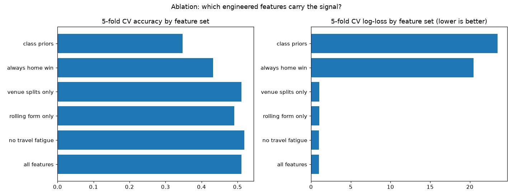

← back to the main walkthrough · repo
The main notebook engineers rolling form, venue splits, and travel fatigue features and fits several models. This follow-up stress-tests the features themselves with a single transparent model, multinomial logistic regression on the 12 engineered features, so any pattern here is about the features, not the model. Data: epl_features_2324.csv, 1,130 matches across 2023-24, 2024-25, and 2025-26. Class balance: 43.2% home win, 32.4% away win, 24.4% draw.

| season | matches | 5-fold CV accuracy | 5-fold CV log-loss |
|---|---|---|---|
| 2023-24 | 380 | 0.500 | 1.042 |
| 2024-25 | 380 | 0.497 | 1.038 |
| 2025-26 | 370 | 0.465 | 1.076 |
The signal is stable across the first two seasons and dips slightly in 2025-26. A forward test, training on 2023-24 and 2024-25 and testing on 2025-26, gives accuracy 0.478 and log-loss 1.067, consistent with the cross-validation story: the features generalize forward in time, not just within shuffled folds.

| feature set | n features | 5-fold CV accuracy | 5-fold CV log-loss |
|---|---|---|---|
| all features | 12 | 0.511 | 1.014 |
| no travel fatigue | 10 | 0.519 | 1.011 |
| venue splits only | 4 | 0.511 | 1.020 |
| rolling form only | 6 | 0.491 | 1.023 |
| always home win | 0 | 0.432 | — |
| class priors | 0 | 0.348 | — |
Two honest findings. First, the model clearly beats the naive baselines: 0.511 accuracy against 0.432 for always predicting the home team. Second, the travel fatigue features do not earn their keep for this model: dropping them improves both accuracy (0.519) and log-loss (1.011). They may help a different model, but here they add noise. The venue-split features alone match the full set on accuracy, which says home/away form splits are doing most of the work.
Script: analysis/ in the repo.